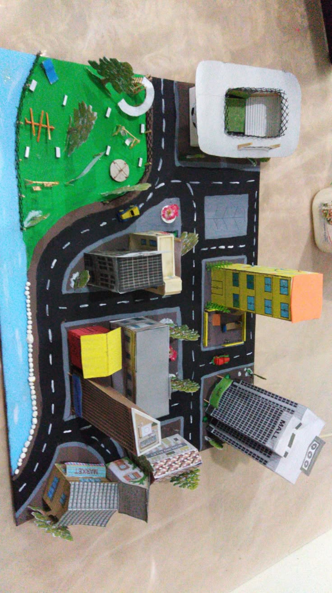
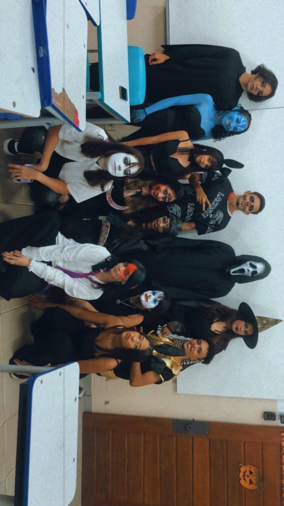

Projetos Escolares
Culminância de Clubes

Neste projeto os alunos apresentaram seus trabalhos dos clubes juvenis da escola. As apresentações foram divididas por salas, cada uma teve um lider e um grupo, foi apresentado para toda a escola.
Halloween


No projeto de halloween os alunos ganham pontos por participar das atividades, que incluem maquiagem, teatro, fantasia, decoração de classe, desenhos, contos etc.
![]()